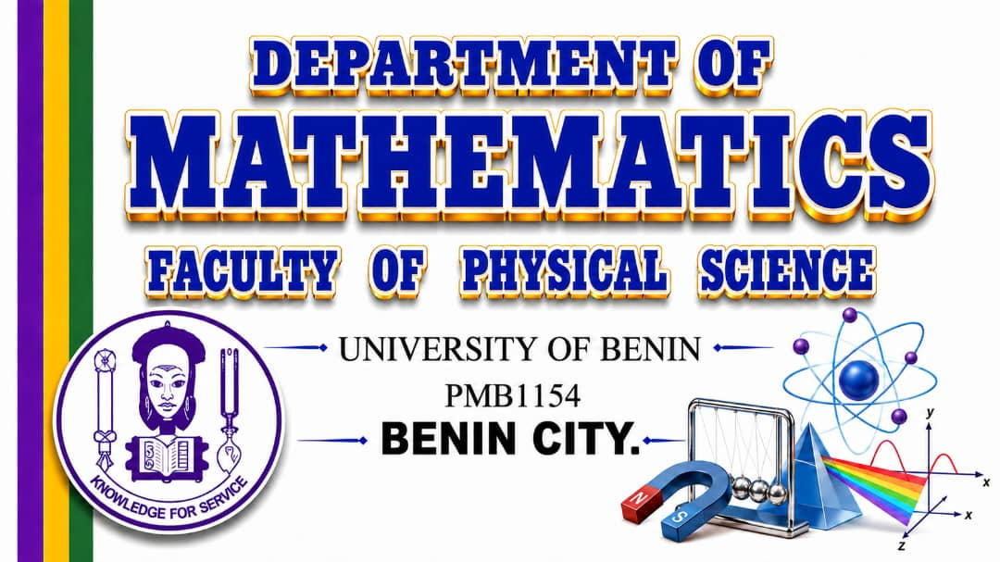
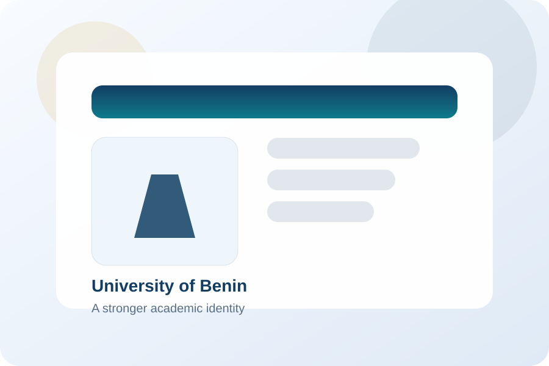

Knowledge for Service: Mathematics for technology and society.
In the spirit of the University's motto, the Department provides courses oriented towards application and service to the nation. We prepare problem-solvers for academia, business, commerce, and industry.

Explore Our Academic Degrees


Aims, Objectives, and Research
Mathematical methods are used to an ever-increasing extent in almost all fields of human endeavour. Our aim is to provide degree options relevant to national needs, offer vital service courses to other faculties, and run sub-degree programmes for candidates building their foundational knowledge.
Learn More About Us →4-Year Full-Time Programme (UME)
Admission to the first year is by competitive entrance examination open to candidates who have obtained credit passes in five subjects at the WAEC/NECO G.C.E. or SSCE in not more than two sittings.
- General Requirements: Five credits including English Language and Mathematics.
- B.Sc. Mathematics & Economics: Requires Economics and any two of Biology, Chemistry, Physics, Agric. Science, or Geography. UME Subjects: English, Mathematics, Economics, and one Science subject.
- B.Sc. Industrial Mathematics: Requires any three of Physics, Chemistry, Biology, and Agric. Science. UME Subjects: English, Mathematics, Physics, and one other Science subject.
3-Year Direct Entry Programme
In addition to fulfilling the UME requirements, candidates may be considered for Direct Entry admission if they possess any of the following:
- Advanced Level: At least two A-Level passes (GCE/HSC) including Mathematics (and Economics for Maths/Econs, or Physics/Chemistry/Statistics for Industrial Maths).
- UNIBEN Diplomas: Credit/Merit level pass in Computer Science (DCS), Mathematics Education (DME), Accounting (DIA/DIA), Computer Engineering (DICE), SLT, or Analytical & Industrial Chemistry.
- Other Diplomas/OND: Upper credit level pass in Mathematics/Statistics, Computer Science, Accounting, or Business Studies from a recognized institution.
- HND: Lower credit level pass in relevant areas (Mathematics, Statistics, Computer Science, SLT).
- NCE: Credit level pass in Mathematics and relevant subjects (Economics/Statistics/Computer Science) with an overall credit level pass.
- Degree Holders: A B.Sc. degree in any of the Sciences or Social Sciences with at least 3rd Class Honours.
Head of Department & Department Leaders

Head of Department
Prof. Emeka Nwosu
Lecture and tutorials

Applied exercises